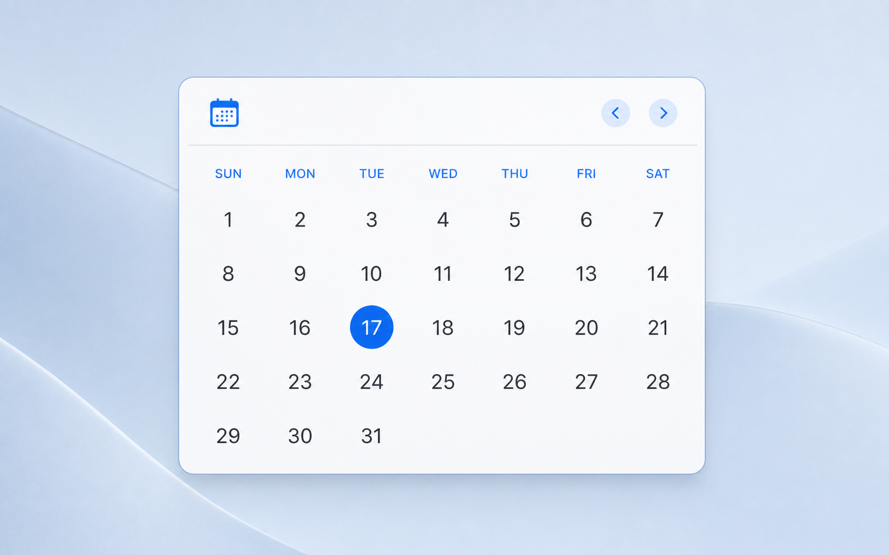

MEDIUM · 2×1
Two Months
See this month and the next side by side.
FOR macOS
A quiet, native calendar for the place you already look: your desktop.

CALENDAR, SIMPLIFIED
Just Calendar Widget does one thing well: it puts the months ahead in a beautifully restrained view.
QUIET BY DESIGN
Built with SwiftUI and WidgetKit for a familiar, responsive experience.
No sign-in, tracking, network requests, or calendar data leaving your Mac.
Language, week start, time zone, and colour follow your Mac automatically.
OPEN SOURCE · MIT LICENSE
Download Just Calendar Widget, add a view to your desktop, and get on with your day.
Get the latest release